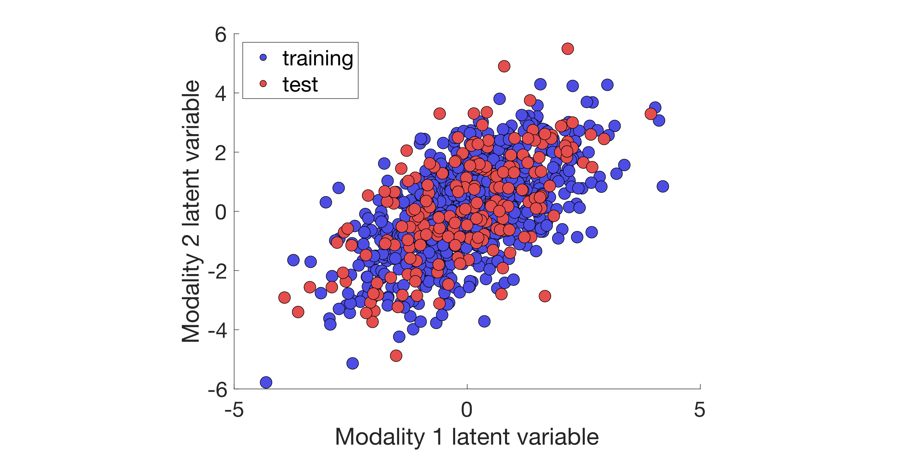
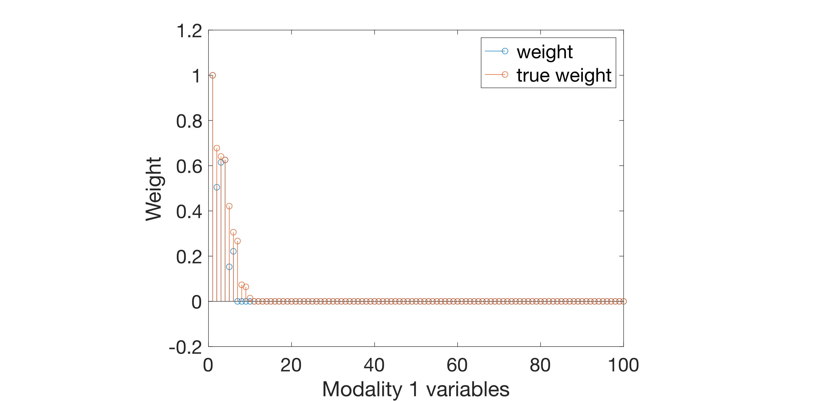

Simulated data
example_simulation
This is a demo for simulated data. We will discuss step by step how to
generate data, run an analysis as well as how to visualize the results.
Copy and paste the code chunks into a function to create your own
experiment or copy the function from the examples folder of the
toolkit.
Generate data
First, we generate the simulated data using the
generate_data function of the toolkit. We
will use 1000 examples and 100 features in both data modalities. We set
the signal to be sparse with 10% of the features in each modality that
are relevant to capture the association across modalities. The noise
parameter of the model is set to 1. For further details on the generative
model, see Mihalik et al. in review.
%----- Generate data
% Data folder
data_dir = fullfile(fileparts(mfilename('fullpath')), 'example_simulation', 'data');
if ~exist(fullfile(data_dir, 'X.mat'), 'file') || ...
~exist(fullfile(data_dir, 'Y.mat'), 'file')
% Generate simulated data
[X, Y, wX, wY] = generate_data(1000, 100, 100, 10, 10, 1);
% Save simulated data and true model weights
if ~isfolder('data_dir')
mkdir(data_dir);
end
save(fullfile(data_dir, 'X.mat'), 'X');
save(fullfile(data_dir, 'Y.mat'), 'Y');
save(fullfile(data_dir, 'wX.mat'), 'wX');
save(fullfile(data_dir, 'wY.mat'), 'wY');
end
Analysis
Now we are ready to set up the analysis. We start by running set_path
to add the necessary paths of the toolkit to your MATLAB path.
%----- Analysis
% Set path for analysis
set_path;
Project folder
Next, we specify the folder to our project. Make sure to specify the correct path. We recommend to use a full path, but a relative path should also work.
% Project folder
cfg.dir.project = fullfile(fileparts(data_dir));
Machine
Now, we configure the CCA/PLS model we would like to use. We set
machine.name to spls for Sparse PLS.
To select the best hyperparameter (L1 regularization for SPLS), we will use
generalizability (measured as average out-of-sample corretion on the
validation sets) and stability (measured as the avarage similarity of
weights across the inner training sets) as a joint optimization criterion.
This is set by machine.param.crit = correl+simwxy. For further details
on this criterion, see Mihalik et al. (2020)
% Machine settings
cfg.machine.name = 'spls';
cfg.machine.param.crit = 'correl+simwxy';
For more information on the CCA/PLS models and the hyperparameter choices, see here.
Framework
Next, we set the framework name to holdout and the number of outer data
splits to 1 to perform a single holdout approach.
% Framework settings
cfg.frwork.name = 'holdout';
cfg.frwork.split.nout = 1;
For further details on the framework choices, see here.
Deflation
Next, we set the deflation of SPLS. We will use PLS-mode A deflation.
% Deflation settings
cfg.defl.name = 'pls-modeA';
For further details on the deflation choices, see here.
Environment
Next, we set the computational environment for the toolkit. As our data is relatively low-dimensional (i.e., number of features is not too high) SPLS will run quiclky locally on our computer.
% Environment settings
cfg.env.comp = 'local';
For further details on the environmental settings, see here.
Statistical inference
Finally, we need to define how the statistical inference is performed. For quicker results, we wet the number of permutations to 100, however, we recommend using at least 1000 permutations in general.
% Statistical inference settings
cfg.stat.nperm = 100;
For further details on the statistical inference, see here.
Run analysis
To run the analysis, we simply update our cfg structure to add all
necessary default values that we did not explicitly define and then run
the main function. After the analysis, we clean up all the duplicate
and intermediate files to save disc space. Note that if you run the
analysis in a cluster environment then you will need to comment out
the last line and run it manually once the analysis is completed as the
cleanup_files function does not work in a parallel environment.
% Update cfg with defaults
cfg = cfg_defaults(cfg);
% Run analysis
main(cfg);
% Clean up analysis files to save disc space
cleanup_files(cfg);
Visualization
Now that we have run our first analysis, let's plot some of the results.
Before we can do any plotting, we need to make sure that we have called
set_path('plot') to add the plotting folder. Then we load the res
structure.
In general, we advise you to plot your results on a local computer as it
is often cumbersome and slow in a cluster environment. If you move your
results from a cluster to a local computer, you need update the paths in
your cfg*.mat and res*.mat files using update_dir. This should be
called once the res structure is loaded either manually or by res_defaults.
%----- Visualization
% Set path for plotting
set_path('plot');
% Load res
res.dir.frwork = cfg.dir.frwork;
res.frwork.level = 1;
res = res_defaults(res, 'load');
Plot grid search results
First, we plot the grid search results of the hyperparameter
optimization. As first argument, we need to pass the res structure.
Then we specify the data modality as string. The last argument is a
varargin to define an optional number of metrics. Each metric will be
plotted as a function of the hyperparameter grid and in a separate
subplot. In this example, we plot the test (out-of-sample) correlation
and the joint generalizability-stability criterion (dist2), which was
used for selecting the best hyperparameter. For more details, see
Mihalik et al. (2020)
% Plot hyperparameter surface for grid search results
plot_paropt(res, 1, {'correl', 'simwx', 'simwy'}, ...
'gen.figure.Position', [500 600 1200 400], 'gen.axes.FontSize', 20, ...
'gen.axes.XScale', 'log', 'gen.axes.YScale', 'log');

Plot projections
To plot the data projections (or latent variables) that has been
learnt by the model, simply run plot_proj. As first argument, we need
to pass the res structure, in which we define a custom xlabel and
ylabel. Then, we specify the data modalities as cell array and the level
of associative effect. In this example, we plot the projections of X and
Y for the first associative effect. We set the fourth input parameter to
'osplit' so that the training and test data of the outer split will be used
for the plot. The following argument defines the outer data split we want
to use (in this demo, we have only one split). We use the second to last
argument to specify the colour-coding of the data using the training and
test data as groups (teid). Finally, we specify the low-level
function that will plot the results. In this case it is plot_proj_2d_group.
Please see the documentation of plot_proj for more details.
% Plot data projections
plot_proj(res, {'X' 'Y'}, res.frwork.level, 'osplit', 1, ...
'training+test', '2d_group', 'gen.axes.FontSize', 20, ...
'gen.legend.FontSize', 20, 'gen.legend.Location', 'NorthWest', ...
'proj.scatter.SizeData', 120, 'proj.scatter.MarkerEdgeColor', 'k', ...
'proj.scatter.MarkerFaceColor', [0.3 0.3 0.9; 0.9 0.3 0.3], ...
'proj.xlabel', 'Modality 1 latent variable', ...
'proj.ylabel', 'Modality 2 latent variable');

Plot weights
Plotting model weights heavily depends on the kind of data that has been
used in the analysis. In case of our simulated data, we are interested
if the model can recover the weights that were used for generating the
data (these true model weights were automatically saved in our data
folder as wx.mat and wy.mat). We we use a stem plot with the recovered
weights in blue, and the true weights in red. Again, we use a costum
xlabel in the figures. As first argument, we need to pass the res
function, in which we define our custom xlabel for the figures. Next,
we specify the data modality and the type of the modality as strings. In
this example, we set these to X or Y and simul. The following
argument defines the outer data split we want to use. Finally, we specify
the low-level function that will plot the results. In this example, it
will be plot_weight_stem. Please see the documentation of
plot_weight for more details.
% Plot modality 1 weights as stem plot
plot_weight(res, 'X', 'simul', 1, 'stem', ...
'gen.axes.FontSize', 20, 'gen.legend.FontSize', 20, ...
'gen.axes.YLim', [-0.2 1.2], 'simul.weight.norm', 'minmax', ...
'simul.xlabel', 'Modality 1 variables');

% Plot modality 2 weights as stem plot
plot_weight(res, 'Y', 'simul', 1, 'stem', ...
'gen.axes.FontSize', 20, 'gen.legend.FontSize', 20, ...
'gen.axes.YLim', [-0.2 1.2], 'simul.weight.norm', 'minmax', ...
'simul.xlabel', 'Modality 2 variables');